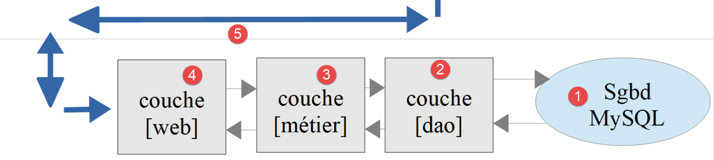

19. Exercice d'application – version 9
Dans cette version, nous allons améliorer le serveur de la façon suivante :
- actuellement, à chaque requête, les données de l'administration fiscale sont cherchées dans la base de données. Nous allons utiliser une session :
- lors de la 1re requête d'un utilisateur, les données de l'administration fiscale sont cherchées dans la base de données et mises en session ;
- lors des requêtes suivantes du même utilisateur, les données de l'administration fiscale sont cherchées dans la session. On peut espérer un léger gain de temps d'exécution car les requêtes en base de données coûtent cher ;
- la session servira aussi à ne faire l'authentification de l'utilisateur qu'une fois ;
- le serveur va noter dans un fichier texte (des logs) les moments importants :
- l'authentification réussie ou ratée ;
- la validité ou non des paramètres envoyés par le client ;
- le résultat du calcul de l'impôt ;
- les différents cas d'erreur ;
- en cas d'erreur fatale, un mail sera envoyé à l'administrateur de l'application .
Le client devra lui aussi être modifié pour gérer le cookie de session que le serveur va lui envoyer.
19.1. Le serveur
Nous nous intéressons à la partie serveur de l'application.

Cette architecture sera implémentée par les fichiers suivants :
| scripts-web/impots/version-09
├── Dao
│ └── ServerDaoWithSession.php
├── Data
│ ├── .htaccess
│ ├── config-server.json
│ └── logs.txt
├── Tests
│ └── ServerDaoTest.php
├── Utilities
│ ├── Logger.php
│ └── SendAdminMail.php
└── impots-server.php
|
Les autres fichiers sont ceux des versions 5 et 8.
19.1.1. Utilitaires
19.1.1.1. La classe [Logger]
La classe [Logger] sera utilisée pour écrire des logs dans un fichier texte :
| <?php
declare(strict_types=1);
// espace de noms
namespace Application;
// un journal (logs) dans un fichier texte
final readonly class Logger
{
// constructeur : le fichier des logs est créé s'il n'existe pas
public function __construct(private string $logsFilename)
{
// on vérifie qu'on peut écrire dans le fichier (ajout d'une chaîne vide)
if (@file_put_contents($logsFilename, "", FILE_APPEND) === false) {
throw new ExceptionImpots("Echec lors de la création du fichier de logs [$logsFilename]", 50);
}
}
// écriture d'un message dans les logs, précédé de la date et de l'heure
public function write(string $message): void
{
$date = (new \DateTimeImmutable())->format("d/m/y H:i:s.v");
// FILE_APPEND : on écrit à la fin du fichier
// LOCK_EX : le fichier est verrouillé pendant l'écriture
file_put_contents($this->logsFilename, "$date : $message\n", FILE_APPEND | LOCK_EX);
}
}
|
Commentaires
- ligne 9 : la classe est [final] (elle ne peut être dérivée) et [readonly] : son unique attribut, le nom du fichier des logs, ne peut être modifié après la construction de l'objet ;
- ligne 12 : le constructeur de la classe reçoit comme paramètre le nom du fichier de logs ;
- ligne 15 : on vérifie qu'on peut écrire dans le fichier en lui ajoutant une chaîne vide. Le drapeau [FILE_APPEND] fait que le fichier est créé s'il n'existe pas et que son contenu est préservé sinon. L'opérateur [@] empêche PHP d'afficher un avertissement (warning) en cas d'échec : nous traitons nous-mêmes l'erreur ;
- ligne 16 : si l'écriture n'a pu se faire, une exception est lancée ;
- ligne 21 : la méthode [write] permet d'écrire le message [$message] dans le fichier de logs, précédé de la date et de l'heure. Le format [d/m/y H:i:s.v] donne le jour, le mois, l'année sur deux chiffres, puis les heures, minutes, secondes et millisecondes ;
- ligne 26 : la fonction [file_put_contents] ouvre le fichier, y ajoute la ligne et le referme. Il n'y a donc plus de méthode [close] comme dans la version PHP 7 de la classe, qui gardait le fichier ouvert entre deux écritures .
L'application serveur est susceptible de servir plusieurs clients simultanément. Or on a un seul fichier de logs pour tous. Il y a donc un risque d'accès concurrents pour écrire dans le fichier. Le cours PHP 7 ignorait le problème. Ici, le drapeau [LOCK_EX] demande à [file_put_contents] de verrouiller le fichier pendant l'écriture : si une autre requête veut écrire en même temps, elle attend que le verrou soit levé. Une ligne de logs n'est donc jamais mélangée avec une autre. En revanche, les lignes écrites par deux requêtes simultanées peuvent s'intercaler les unes entre les autres.
19.1.1.2. La classe [SendAdminMail]
La classe [SendAdminMail] permet d'envoyer un mail à l'administrateur de l'application en cas de plantage de celle-ci :
| <?php
declare(strict_types=1);
// espace de noms
namespace Application;
// dépendances Symfony Mailer
use Symfony\Component\Mailer\Mailer;
use Symfony\Component\Mailer\Transport;
use Symfony\Component\Mime\Email;
// envoi d'un mail à l'administrateur de l'application
final readonly class SendAdminMail
{
// $config : les informations nécessaires à l'envoi du mail
// $logger : un journal facultatif pour noter le résultat de l'envoi
public function __construct(private array $config, private ?Logger $logger = null)
{
}
// envoi du message [$message] à l'administrateur
// la méthode ne lance pas d'exception : un échec de l'envoi est seulement noté dans les logs
public function send(string $message): void
{
// le mail est envoyé au serveur SMTP $this->config["smtp-server"] sur le port $this->config["smtp-port"]
// de la part de $this->config["from"] pour le destinataire $this->config["to"]
// avec le sujet $this->config["subject"] et les pièces jointes $this->config["attachments"]
// si $this->config["tls"] est vrai, la connexion est sécurisée et authentifiée
$config = $this->config;
try {
// création du message
$email = (new Email())
->from($config["from"])
->to($config["to"])
->subject($config["subject"])
->text($message);
// pièces jointes
foreach ($config["attachments"] as $attachment) {
if (file_exists($attachment)) {
$email->attachFromPath($attachment);
} else {
$this->logger?->write("La pièce jointe [$attachment] n'existe pas");
}
}
// le transport du message
$dsn = "smtp://{$config["smtp-server"]}:{$config["smtp-port"]}";
if ($config["tls"]) {
// connexion sécurisée (STARTTLS) et authentifiée
$verifyPeer = ($config["verify-peer"] ?? true) ? 1 : 0;
$dsn = sprintf("smtp://%s:%s@%s:%d?require_tls=1&verify_peer=%d",
rawurlencode($config["user"]), rawurlencode($config["password"]),
$config["smtp-server"], $config["smtp-port"], $verifyPeer);
}
// envoi du message
(new Mailer(Transport::fromDsn($dsn)))->send($email);
$this->logger?->write("Message [$message] envoyé à {$config["to"]}");
} catch (\Throwable $ex) {
// échec de l'envoi
$this->logger?->write("Erreur lors de l'envoi du message [$message] : {$ex->getMessage()}");
}
}
}
|
Commentaires
- lignes 9-11 : le cours PHP 7 utilisait la bibliothèque [SwiftMailer], qui n'est plus maintenue. Nous utilisons [Symfony Mailer], présentée au chapitre sur les fonctions réseau ;
- ligne 18 : le constructeur reçoit deux paramètres :
- [$config] : un tableau associatif contenant toutes les informations nécessaires à l'envoi du mail ;
- [$logger] : un journal permettant de noter le résultat de l'envoi du mail. Le paramètre est facultatif : sa valeur par défaut est [null] ;
- ligne 24 : la méthode [send] envoie le message [$message]. Le code est celui de la fonction [sendmail] du script [smtp-02.php] du chapitre sur les fonctions réseau ;
- ligne 43 : l'opérateur nullsafe [?->] (PHP 8.0) n'appelle la méthode [write] que si [$this->logger] n'est pas [null]. Il remplace le test [if ($this->logger !== NULL)] du script PHP 7 ;
- ligne 58 : la méthode [send] intercepte toutes les erreurs : un échec de l'envoi du mail est seulement noté dans les logs. Il ne faut pas qu'une erreur dans le traitement d'une erreur empêche le serveur de répondre à son client .
Le tableau associatif [$config] aura la forme suivante :
| "adminMail": {
"smtp-server": "localhost",
"smtp-port": 1025,
"from": "guest@localhost",
"to": "guest@localhost",
"subject": "plantage du serveur de calcul d'impôts",
"tls": false,
"attachments": []
},
|
Le mail est envoyé au serveur [Mailpit] présenté au chapitre sur les fonctions réseau, qui écoute sur le port 1025 de la machine [localhost] et garde tous les mails qu'il reçoit. Il doit être lancé (fichier [mailpit.bat] du dossier [scripts-console/inet/mailpit]).
19.1.2. La couche [dao]
La couche [dao] de la version 9 est implémentée par la classe [ServerDaoWithSession] suivante :
| <?php
declare(strict_types=1);
// espace de noms
namespace Application;
// une couche [dao] qui peut être construite à partir de données fiscales déjà acquises
class ServerDaoWithSession extends ServerDao
{
// le constructeur reçoit :
// - soit le nom du fichier JSON décrivant la base de données : les données fiscales sont lues dans la base
// - soit les données fiscales elles-mêmes, déjà acquises (en session par exemple)
public function __construct(string|TaxAdminData $source)
{
if ($source instanceof TaxAdminData) {
// cas le plus simple : les données sont déjà là
$this->taxAdminData = $source;
} else {
// on passe la main à la classe parent qui sait utiliser la base de données
parent::__construct($source);
}
}
}
|
Commentaires
- ligne 9 : la classe [ServerDaoWithSession] de la version 9 étend la classe [ServerDao] de la version 8. En effet, la classe [ServerDao] sait utiliser la base de données. Il ne nous reste plus qu'à prévoir le cas où les données de l'administration fiscale ont déjà été acquises ;
- ligne 14 : le constructeur reçoit un paramètre qui peut être de deux types. Le type union [string|TaxAdminData] (PHP 8.0) l'exprime :
- une chaîne de caractères : le nom du fichier contenant les informations permettant de se connecter à la base de données, si les données de l'administration fiscale n'ont pas encore été acquises ;
- un objet [TaxAdminData] : les données de l'administration fiscale, si elles ont déjà été acquises ;
- lignes 16-18 : l'opérateur [instanceof] permet de savoir lequel des deux types a été reçu. Si ce sont les données fiscales, on les mémorise dans l'attribut [taxAdminData] hérité de la classe [ServerDao]. C'est pour cette raison que cet attribut a été déclaré [protected readonly] dans la version 8. La classe PHP 7 avait un constructeur à deux paramètres, l'un des deux devant être [NULL] ;
- ligne 21 : sinon on passe la main au constructeur de la classe parent, qui va chercher les données en base .
Lors du démarrage d'une session web, la couche [dao] sera construite avec le nom du fichier de la base de données. Les données de l'administration fiscale seront alors recherchées en base et mémorisées dans la session. Lors des requêtes ultérieures de la même session, la couche [dao] sera construite avec l'objet [TaxAdminData] provenant de la session. Il n'y aura donc pas de recherche en base.
19.1.3. Le script serveur
Le script serveur [impots-server.php] est configuré par le fichier JSON [config-server.json] suivant :
| {
"databaseFilename": "../version-08/Data/database-mysql.json",
"dependencies": [
"../../../scripts-console/impots/version-05/Entities/ExceptionImpots.php",
"../../../scripts-console/impots/version-05/Entities/TaxAdminData.php",
"../../../scripts-console/impots/version-05/Entities/Database.php",
"../../../scripts-console/impots/version-05/Utilities/Utilitaires.php",
"../version-08/Dao/InterfaceServerDao.php",
"../version-08/Dao/ServerDao.php",
"Dao/ServerDaoWithSession.php",
"../version-08/Metier/InterfaceServerMetier.php",
"../version-08/Metier/ServerMetier.php",
"Utilities/Logger.php",
"Utilities/SendAdminMail.php"
],
"users": [
{
"login": "admin",
"passwd": "admin"
}
],
"adminMail": {
"smtp-server": "localhost",
"smtp-port": 1025,
"from": "guest@localhost",
"to": "guest@localhost",
"subject": "plantage du serveur de calcul d'impôts",
"tls": false,
"attachments": []
},
"logsFilename": "Data/logs.txt"
}
|
- ligne 2 : on utilise la description de la base de données MySQL de la version 8 ;
- lignes 3-15 : les fichiers des versions 5 et 8, et les trois nouveaux fichiers de la version 9 ;
- lignes 22-30 : les informations nécessaires à l'envoi d'un mail à l'administrateur. Elles ont maintenant des types JSON adaptés : un nombre pour le port, un booléen pour [tls]. Le fichier PHP 7 utilisait des chaînes (["25"], ["FALSE"]) ;
- ligne 31 : le fichier des logs, relatif au dossier [version-09] du serveur. Il est dans le dossier [Data], protégé par le fichier [.htaccess] de la version 8 : les logs ne doivent pas être lisibles par tous .
Le script serveur [impots-server.php] évolue de la façon suivante :
| <?php
// respect strict des types déclarés des paramètres et des résultats des fonctions
declare(strict_types=1);
// espace de noms
namespace Application;
// dépendances Symfony
use Symfony\Component\HttpFoundation\JsonResponse;
use Symfony\Component\HttpFoundation\Request;
use Symfony\Component\HttpFoundation\Response;
use Symfony\Component\HttpFoundation\Session\Session;
// les erreurs de PHP ne sont pas envoyées au client (elles vont dans le journal du serveur web)
ini_set("display_errors", "0");
// le dossier racine du serveur : les chemins du fichier de configuration sont relatifs à ce dossier
const ROOT_DIRECTORY = __DIR__;
// chemin du fichier de configuration
const CONFIG_FILENAME = ROOT_DIRECTORY . "/Data/config-server.json";
// on récupère la configuration
$config = json_decode(file_get_contents(CONFIG_FILENAME), true, flags: JSON_THROW_ON_ERROR);
// on inclut les dépendances nécessaires au script
require_once ROOT_DIRECTORY . "/../../../vendor/autoload.php";
foreach ($config["dependencies"] as $dependency) {
require_once ROOT_DIRECTORY . "/$dependency";
}
// session (après le chargement de la classe [TaxAdminData] dont un objet peut être en session)
$session = new Session();
$session->start();
// création du fichier des logs
try {
$logger = new Logger(ROOT_DIRECTORY . "/" . $config["logsFilename"]);
} catch (ExceptionImpots $ex) {
// erreur 500 sans logs - le message ne doit pas révéler l'arborescence des fichiers du serveur
$message = "Echec lors de la création du fichier de logs [{$config["logsFilename"]}]";
doInternalServerError($message, $config["adminMail"]);
// terminé
exit;
}
// 1er log
$logger->write("---nouvelle requête");
// on récupère la requête courante
$request = Request::createFromGlobals();
// authentification seulement la 1re fois
if (!$session->has("user")) {
// log
$logger->write("Authentification en cours…");
// les identifiants envoyés par le client (null s'il n'en a pas envoyé)
$requestUser = $request->getUser();
$requestPassword = $request->getPassword();
// l'utilisateur fait-il partie des utilisateurs autorisés ?
$trouvé = $requestUser !== null && $requestPassword !== null
&& array_any(
$config["users"],
fn(array $user): bool => $user["login"] === $requestUser && hash_equals($user["passwd"], $requestPassword)
);
if (!$trouvé) {
// pas trouvé - code 401
sendResponse(
["erreur" => "Echec de l'authentification [$requestUser]"],
Response::HTTP_UNAUTHORIZED,
["WWW-Authenticate" => 'Basic realm="Serveur de calcul des impots"'],
$logger
);
// terminé
exit;
}
// on note dans la session qu'on a authentifié l'utilisateur
$session->set("user", $requestUser);
// log
$logger->write("Authentification réussie [$requestUser]");
} else {
// log
$logger->write("Authentification prise en session…");
}
// on a un utilisateur valide - on vérifie les paramètres reçus
$erreurs = [];
// on doit avoir une requête GET avec trois paramètres
if ($request->getMethod() !== "GET" || $request->query->count() !== 3) {
$erreurs[] = "Méthode GET requise avec les seuls paramètres [marié, enfants, salaire]";
}
// le statut marital
if (!$request->query->has("marié")) {
$erreurs[] = "paramètre marié manquant";
} else {
$marié = strtolower(trim($request->query->getString("marié")));
if (!in_array($marié, ["oui", "non"], true)) {
$erreurs[] = "paramètre marié [$marié] invalide";
}
}
// le nombre d'enfants et le salaire : des nombres entiers >= 0
$valeurs = [];
foreach (["enfants", "salaire"] as $paramètre) {
if (!$request->query->has($paramètre)) {
$erreurs[] = "paramètre $paramètre manquant";
continue;
}
$valeur = trim($request->query->getString($paramètre));
if (preg_match('/^\d+$/', $valeur) !== 1) {
$erreurs[] = "paramètre $paramètre [$valeur] invalide";
} else {
$valeurs[$paramètre] = (int) $valeur;
}
}
// autres paramètres dans la requête ?
foreach (array_diff(array_keys($request->query->all()), ["marié", "enfants", "salaire"]) as $paramètre) {
$erreurs[] = "paramètre [$paramètre] invalide";
}
// erreurs ?
if ($erreurs !== []) {
// on envoie un code d'erreur 400 au client
sendResponse(["erreurs" => $erreurs], Response::HTTP_BAD_REQUEST, [], $logger);
// terminé
exit;
}
// log
[$enfants, $salaire] = [$valeurs["enfants"], $valeurs["salaire"]];
$logger->write("paramètres ['marié'=>$marié, 'enfants'=>$enfants, 'salaire'=>$salaire] valides");
// on a tout ce qu'il faut pour travailler
// création de la couche [dao]
if (!$session->has("taxAdminData")) {
// les données fiscales sont prises dans la base de données
$logger->write("données fiscales prises en base de données");
try {
// construction de la couche [dao]
$dao = new ServerDaoWithSession(ROOT_DIRECTORY . "/" . $config["databaseFilename"]);
// on met les données fiscales en session
$session->set("taxAdminData", $dao->getTaxAdminData());
} catch (ExceptionImpots $ex) {
// erreur 500
doInternalServerError($ex->getMessage(), $config["adminMail"], $logger);
// terminé
exit;
}
} else {
// les données fiscales sont prises dans la session
$dao = new ServerDaoWithSession($session->get("taxAdminData"));
// log
$logger->write("données fiscales prises en session");
}
// création de la couche [métier]
$métier = new ServerMetier($dao);
// calcul de l'impôt
$result = $métier->calculerImpot($marié, $enfants, $salaire);
// on rend la réponse
sendResponse($result, Response::HTTP_OK, [], $logger);
// fin
exit;
// --------------------------------------------------------------------------
// erreur fatale : un mail à l'administrateur et une réponse 500 au client
function doInternalServerError(string $message, array $adminMail, ?Logger $logger = null): void
{
// le message d'erreur d'un pilote de SGBD peut ne pas être codé en UTF-8 (Windows-1252 sous Windows)
if (!mb_check_encoding($message, "UTF-8")) {
$message = mb_convert_encoding($message, "UTF-8", "Windows-1252");
}
// on envoie un mail à l'administrateur
// [SendAdminMail] intercepte toutes les exceptions et les logue lui-même
(new SendAdminMail($adminMail, $logger))->send($message);
// on envoie un code d'erreur 500 au client
sendResponse(["erreur" => $message], Response::HTTP_INTERNAL_SERVER_ERROR, [], $logger);
}
// envoi de la réponse HTTP au client
// $result : le tableau à envoyer, sous la forme ["réponse" => $result]
// $statusCode : le statut HTTP de la réponse
// $headers : des entêtes HTTP à ajouter à la réponse
// $logger : le journal de l'application (null s'il n'a pu être créé)
function sendResponse(array $result, int $statusCode, array $headers = [], ?Logger $logger = null): void
{
// la réponse JSON
$response = new JsonResponse(null, $statusCode, $headers);
$response->setEncodingOptions(JSON_UNESCAPED_UNICODE | JSON_UNESCAPED_SLASHES | JSON_PRESERVE_ZERO_FRACTION);
$response->setData(["réponse" => $result]);
// envoi
$response->send();
// log
$logger?->write($response->getContent());
}
|
Commentaires
- ligne 13 : on utilise la classe [Session] de [HttpFoundation], présentée au chapitre précédent ;
- ligne 16 : les erreurs détectées par PHP (warnings, erreurs fatales...) ne sont pas affichées dans le document envoyé au client. Elles iraient corrompre la réponse JSON attendue par celui-ci. Elles restent consignées dans le journal des erreurs du serveur web (fichier [error.log] d'Apache) ;
- lignes 33-34 : on démarre une session. Elle est démarrée après le chargement des fichiers de l'application : la session peut contenir un objet [TaxAdminData], et la classe [TaxAdminData] doit être connue au moment où PHP reconstruit les objets de la session ;
- lignes 37-44 : on essaie de créer le fichier de logs. Si une exception se produit, la fonction [doInternalServerError] est appelée sans journal (le dernier paramètre est absent). Le message d'erreur reprend le nom du fichier de logs donné dans la configuration : le message de l'exception contient le chemin complet du fichier, qui révélerait au client l'organisation des dossiers du serveur ;
- ligne 162 : la fonction [doInternalServerError] accepte trois paramètres :
- [$message] : le message d'erreur ;
- [$adminMail] : les informations permettant d'envoyer un mail à l'administrateur de l'application ;
- [$logger] : le journal de l'application, s'il a pu être créé ;
- lignes 165-166 : le message d'erreur peut provenir du pilote d'un SGBD et ne pas être codé en UTF-8 (cf. version 8) ;
- ligne 170 : on envoie un mail à l'administrateur de l'application ;
- ligne 172 : on envoie la réponse au client avec le code [500 Internal Server Error] ;
- ligne 180 : la fonction [sendResponse] envoie toutes les réponses au client. Ses paramètres sont :
- [$result] : le tableau à envoyer. Le serveur envoie la chaîne JSON du tableau [["réponse" => $result]] ;
- [$statusCode] : le statut HTTP de la réponse ;
- [$headers] : les entêtes HTTP à ajouter à la réponse. C'est le cas de l'entête [WWW-Authenticate] de la réponse 401 ;
- [$logger] : le journal de l'application ;
- ligne 183 : le constructeur de la classe [JsonResponse] accepte les données, le statut et les entêtes de la réponse. Les données sont fixées plus loin par [setData], après le choix des options de [json_encode], qui sont celles de la version 8 ;
- ligne 189 : la réponse JSON envoyée est notée dans les logs ;
- ligne 48 : le 1er log de la requête ;
- ligne 53 : grâce à la session mise en place, on ne fera l'authentification du client qu'une seule fois :
- une fois le client authentifié, on met la clé [user] dans la session, avec pour valeur l'identifiant de l'utilisateur ligne 77 ;
- lors de la requête suivante du même client, le test évite une authentification devenue inutile ;
- lignes 67-72 : en cas d'échec de l'authentification, la réponse 401 est envoyée par la fonction [sendResponse], avec l'entête [WWW-Authenticate] ;
- lignes 86-118 : la vérification des paramètres est celle de la version 8 ;
- ligne 126 : la déstructuration de tableau [[$a, $b] = [...]] affecte en une instruction les deux variables [$enfants] et [$salaire]. Elle remplace la fonction [list] du PHP 7 ;
- ligne 131 : grâce à la session, on ne cherchera les données en base qu'une seule fois :
- lors de la première requête, la recherche en base se fait ligne 136. Les données récupérées sont ensuite mises en session, associées à la clé [taxAdminData] ligne 138 ;
- lors des requêtes suivantes, la clé [taxAdminData] est trouvée en session et les données fiscales sont alors directement communiquées à la couche [dao] ligne 147 ;
- lignes 139-143 : la recherche des données fiscales en base peut échouer. Dans ce cas, on envoie au client un code [500 Internal Server Error] et un mail à l'administrateur ;
- ligne 156 : le reste du code est celui de la version précédente, la réponse étant envoyée par la fonction [sendResponse] .
On remarquera que les fonctions [doInternalServerError] et [sendResponse] sont définies à la fin du script, après l'instruction [exit] : PHP connaît toutes les fonctions définies au premier niveau d'un fichier avant d'exécuter la première instruction de celui-ci.
19.1.4. Tests [PHPUnit]
Nous n'allons tester que la couche [dao] qui est la seule à avoir changé. Le code du test [Tests/ServerDaoTest.php] est le suivant :
| <?php
// respect strict des types déclarés des paramètres et des résultats des fonctions
declare(strict_types=1);
// espace de noms des tests
namespace Application\Tests;
// la classe testée
use Application\ServerDaoWithSession;
// les classes de PHPUnit
use PHPUnit\Framework\TestCase;
final class ServerDaoTest extends TestCase
{
// le dossier racine du serveur
private const string ROOT_DIRECTORY = __DIR__ . "/..";
// la configuration du serveur
private static array $config;
// exécutée une fois, avant le premier test de la classe
#[\Override]
public static function setUpBeforeClass(): void
{
// on récupère la configuration du serveur
self::$config = json_decode(file_get_contents(self::ROOT_DIRECTORY . "/Data/config-server.json"), true, flags: JSON_THROW_ON_ERROR);
// on inclut les dépendances du serveur
foreach (self::$config["dependencies"] as $dependency) {
require_once self::ROOT_DIRECTORY . "/$dependency";
}
}
// les données de l'administration fiscale lues dans la base de données (1re requête d'une session)
public function testTaxAdminData(): void
{
// création de la couche [dao] à partir du fichier décrivant la base de données
$dao = new ServerDaoWithSession(self::ROOT_DIRECTORY . "/" . self::$config["databaseFilename"]);
$taxAdminData = $dao->getTaxAdminData();
// constantes de calcul
$this->assertSame(1551.0, $taxAdminData->plafondQfDemiPart);
$this->assertSame(21037.0, $taxAdminData->plafondRevenusCelibatairePourReduction);
$this->assertSame(42074.0, $taxAdminData->plafondRevenusCouplePourReduction);
$this->assertSame(3797.0, $taxAdminData->valeurReducDemiPart);
$this->assertSame(1196.0, $taxAdminData->plafondDecoteCelibataire);
$this->assertSame(1970.0, $taxAdminData->plafondDecoteCouple);
$this->assertSame(1595.0, $taxAdminData->plafondImpotCelibatairePourDecote);
$this->assertSame(2627.0, $taxAdminData->plafondImpotCouplePourDecote);
$this->assertSame(12502.0, $taxAdminData->abattementDixPourcentMax);
$this->assertSame(437.0, $taxAdminData->abattementDixPourcentMin);
// tranches de l'impôt
$this->assertSame([9964.0, 27519.0, 73779.0, 156244.0, 0.0], $taxAdminData->limites);
$this->assertSame([0.0, 0.14, 0.30, 0.41, 0.45], $taxAdminData->coeffR);
$this->assertSame([0.0, 1394.96, 5798.0, 13913.69, 20163.45], $taxAdminData->coeffN);
}
// les données de l'administration fiscale déjà acquises (requêtes suivantes de la session)
public function testTaxAdminDataEnSession(): void
{
// les données lues en base lors de la 1re requête
$databaseFilename = self::ROOT_DIRECTORY . "/" . self::$config["databaseFilename"];
$taxAdminData = (new ServerDaoWithSession($databaseFilename))->getTaxAdminData();
// création de la couche [dao] à partir de ces données, comme lors des requêtes suivantes de la session
$dao = new ServerDaoWithSession($taxAdminData);
// la couche [dao] rend le même objet, sans accéder à la base de données
$this->assertSame($taxAdminData, $dao->getTaxAdminData());
}
}
|
- lignes 23-31 : on crée un environnement d'exécution identique à celui du script serveur [impots-server.php] ;
- ligne 37 : pour construire la couche [dao], on instancie la classe [ServerDaoWithSession] avec le nom du fichier de la base de données. Le test est ensuite celui de la version 8 ;
- lignes 57-65 : un second test vérifie la construction de la couche [dao] à partir de données fiscales déjà acquises : la couche [dao] doit rendre le même objet, ce que vérifie [assertSame] .
Le résultat des tests est le suivant :
| > php vendor/bin/phpunit scripts-web/impots/version-09/Tests --testdox
PHPUnit 12.5.37 by Sebastian Bergmann and contributors.
Runtime: PHP 8.5.11
Configuration: .../php8-oct-2026/phpunit.xml
.. 2 / 2 (100%)
Time: 00:00.004, Memory: 16.00 MB
Server Dao (Application\Tests\ServerDao)
✔ Tax admin data
✔ Tax admin data en session
OK (2 tests, 14 assertions)
|
19.2. Le client
Nous nous intéressons à la partie cliente de l'application.

Cette architecture sera implémentée par les fichiers suivants :
| scripts-console/impots/version-09
├── Dao
│ └── ClientDao.php
├── Data
│ ├── config-client-ko.json
│ ├── config-client.json
│ ├── errors.json
│ ├── results.json
│ └── taxpayersdata.json
├── Main
│ └── MainImpotsClient.php
└── Tests
└── ClientMetierTest.php
|
Dans la nouvelle version, seuls changent :
- le fichier de configuration [config-client.json] ;
- la couche [dao] du client .
Le script [MainImpotsClient.php] est celui de la version 8.
19.2.1. La couche [dao]
La couche [dao] évolue de la façon suivante :
| <?php
declare(strict_types=1);
// espace de noms
namespace Application;
// dépendances Symfony
use Symfony\Component\HttpClient\HttpClient;
use Symfony\Contracts\HttpClient\Exception\ExceptionInterface;
use Symfony\Contracts\HttpClient\HttpClientInterface;
// la couche [dao] du client : un client HTTP du serveur de calcul de l'impôt qui gère une session
class ClientDao implements InterfaceClientDao
{
// le trait de la version 5 implémente les méthodes [getTaxPayersData] et [saveResults] de l'interface
use TraitDao;
// le client HTTP
private readonly HttpClientInterface $httpClient;
// le cookie de session (null tant que le serveur ne l'a pas envoyé)
private ?string $sessionCookie = null;
// constructeur
// $urlServer : l'URL du serveur de calcul de l'impôt
// $user : l'utilisateur qui fait les requêtes, tableau [login, passwd]
// $httpClientOptions : des options supplémentaires du client HTTP (verify_peer, verify_host...)
public function __construct(
private readonly string $urlServer,
#[\SensitiveParameter] private readonly array $user,
array $httpClientOptions = [],
) {
// le client HTTP : les identifiants de l'utilisateur ne seront envoyés qu'avec la 1re requête
$this->httpClient = HttpClient::create($httpClientOptions);
}
// calcul de l'impôt par le serveur
#[\Override]
public function calculerImpot(string $marié, int $enfants, int $salaire): array
{
// les options de la requête : les paramètres attendus par le serveur
$options = [
"query" => [
"marié" => $marié,
"enfants" => $enfants,
"salaire" => $salaire,
],
];
if ($this->sessionCookie === null) {
// pas encore de session : on envoie les identifiants de l'utilisateur
$options["auth_basic"] = [$this->user["login"], $this->user["passwd"]];
} else {
// on envoie le cookie de session : l'utilisateur est déjà authentifié dans cette session
$options["headers"] = ["Cookie" => $this->sessionCookie];
}
try {
// on fait la requête au serveur
$response = $this->httpClient->request("GET", $this->urlServer, $options);
// le statut, les entêtes et le document JSON de la réponse, même en cas d'erreur (paramètre false)
$statusCode = $response->getStatusCode();
$headers = $response->getHeaders(false);
$json = $response->getContent(false);
} catch (ExceptionInterface $ex) {
// le serveur n'a pu être joint
throw new ExceptionImpots("Erreur de communication avec le serveur ({$ex->getMessage()})", 40, $ex);
}
// logs
// print "$json\n";
// le serveur envoie la chaîne JSON d'un tableau ["réponse" => qqChose]
try {
$réponse = json_decode($json, true, flags: JSON_THROW_ON_ERROR)["réponse"] ?? null;
} catch (\JsonException $ex) {
$réponse = null;
}
if (!is_array($réponse)) {
throw new ExceptionImpots("Réponse du serveur invalide [$json]", 41);
}
// erreur ?
if ($statusCode !== 200) {
// on lance une exception dont le message est la réponse du serveur complétée par son statut HTTP
$message = json_encode(
["statut HTTP" => $statusCode] + $réponse,
JSON_UNESCAPED_UNICODE | JSON_UNESCAPED_SLASHES | JSON_THROW_ON_ERROR
);
throw new ExceptionImpots($message, 42);
}
// on récupère le cookie de session s'il n'est pas encore connu
if ($this->sessionCookie === null) {
foreach ($headers["set-cookie"] ?? [] as $cookie) {
if (preg_match('/^PHPSESSID=(.+?);/', $cookie, $champs) === 1) {
$this->sessionCookie = "PHPSESSID=$champs[1]";
}
}
}
// on rend la réponse : le tableau [impôt, surcôte, décôte, réduction, taux]
return $réponse;
}
}
|
Commentaires
La modification de la couche [dao] consiste à gérer maintenant une session :
- ligne 22 : le cookie de la session. Il vaut [null] tant que le serveur ne l'a pas envoyé. Cet attribut n'est pas [readonly] : il change de valeur après la 1re requête ;
- ligne 30 : les identifiants de l'utilisateur sont maintenant mémorisés dans un attribut, car ils ne sont plus envoyés à chaque requête ;
- ligne 34 : le client HTTP est créé sans l'option [auth_basic] ;
- lignes 49-51 : lors de la 1re requête, le cookie n'existe pas : on fait alors la requête auprès du serveur en envoyant les informations d'authentification. L'option [auth_basic] est cette fois une option de la requête et non du client HTTP ;
- lignes 52-55 : lors des requêtes suivantes, on a normalement le cookie de session. On n'envoie pas alors les informations d'authentification mais le cookie, dans l'entête HTTP [Cookie] ;
- ligne 61 : on récupère les entêtes de la réponse. Comme pour [getContent], le paramètre [false] évite une exception si le statut de la réponse indique une erreur ;
- lignes 88-94 : la réponse du serveur à la 1re requête comporte un cookie de session, dans un entête [Set-Cookie]. On le récupère comme au chapitre précédent et on le mémorise dans l'attribut [$sessionCookie] .
On aurait pu garder l'ancienne version de la couche [dao] et faire l'authentification à chaque requête, car celle-ci a un coût négligeable. Par souci pédagogique, on a voulu rappeler comment un client HTTP peut gérer une session.
19.2.2. Le fichier de configuration
Le fichier de configuration JSON évolue de la façon suivante :
| {
"urlServer": "http://localhost/php8-oct-2026/scripts-web/impots/version-09/impots-server.php",
"user": {
"login": "admin",
"passwd": "admin"
},
"httpClientOptions": {
"verify_peer": false,
"verify_host": false
},
"taxPayersDataFilename": "Data/taxpayersdata.json",
"resultsFilename": "Data/results.json",
"errorsFilename": "Data/errors.json",
"dependencies": [
"../version-05/Entities/ExceptionImpots.php",
"../version-05/Entities/TaxPayerData.php",
"../version-05/Utilities/Utilitaires.php",
"../version-05/Dao/TraitDao.php",
"../version-08/Dao/InterfaceClientDao.php",
"Dao/ClientDao.php",
"../version-08/Metier/InterfaceClientMetier.php",
"../version-08/Metier/ClientMetier.php"
]
}
|
- ligne 2 : l'URL du serveur de la version 9 ;
- lignes 14-23 : seule la couche [dao] est nouvelle. Les autres fichiers sont ceux des versions 5 et 8 .
19.3. Quelques tests
Pour ces tests, le serveur Apache, le SGBD MySQL et le serveur de mails [Mailpit] doivent être lancés.
19.3.1. Test 1
Tout d'abord nous exécutons le client dans un environnement sans erreurs :
| > php MainImpotsClient.php
Les résultats ont été enregistrés dans le fichier [Data/results.json]
Terminé
|
Les résultats sont toujours ceux des versions précédentes. Mais maintenant côté serveur, on a un fichier de logs [Data/logs.txt] :
| 01/10/26 18:08:11.971 : ---nouvelle requête
01/10/26 18:08:11.972 : Authentification en cours…
01/10/26 18:08:11.972 : Authentification réussie [admin]
01/10/26 18:08:11.972 : paramètres ['marié'=>oui, 'enfants'=>2, 'salaire'=>55555] valides
01/10/26 18:08:11.972 : données fiscales prises en base de données
01/10/26 18:08:11.973 : {"réponse":{"impôt":2814,"surcôte":0,"décôte":0,"réduction":0,"taux":0.14}}
01/10/26 18:08:11.976 : ---nouvelle requête
01/10/26 18:08:11.977 : Authentification prise en session…
01/10/26 18:08:11.977 : paramètres ['marié'=>oui, 'enfants'=>2, 'salaire'=>50000] valides
01/10/26 18:08:11.977 : données fiscales prises en session
01/10/26 18:08:11.977 : {"réponse":{"impôt":1384,"surcôte":0,"décôte":384,"réduction":347,"taux":0.14}}
01/10/26 18:08:11.979 : ---nouvelle requête
01/10/26 18:08:11.979 : Authentification prise en session…
01/10/26 18:08:11.979 : paramètres ['marié'=>oui, 'enfants'=>3, 'salaire'=>50000] valides
01/10/26 18:08:11.980 : données fiscales prises en session
01/10/26 18:08:11.980 : {"réponse":{"impôt":0,"surcôte":0,"décôte":720,"réduction":0,"taux":0.14}}
…
|
- lignes 1-6 : lors de la 1re requête, il y a authentification et recherche des données en base ;
- lignes 7-11 : lors de la requête suivante, il n'y a plus d'authentification et les données sont prises en session. Cela se répète lors des requêtes suivantes (lignes 12 et au-delà) .
19.3.2. Test 2
Maintenant, simulons une panne du SGBD MySQL comme dans la version 8 (port 3307 dans le fichier [version-08/Data/database-mysql.json]). Côté client, on a le résultat console suivant :
| > php MainImpotsClient.php
Erreur n° 42 : {"statut HTTP":500,"erreur":"Erreur d'accès à la base de données (SQLSTATE[HY000] [2002] Connection refused)"}
Terminé
|
Côté serveur, on a les logs suivants :
| 01/10/26 18:06:48.367 : ---nouvelle requête
01/10/26 18:06:48.367 : Authentification en cours…
01/10/26 18:06:48.367 : Authentification réussie [admin]
01/10/26 18:06:48.367 : paramètres ['marié'=>oui, 'enfants'=>2, 'salaire'=>55555] valides
01/10/26 18:06:48.367 : données fiscales prises en base de données
01/10/26 18:06:48.450 : Message [Erreur d'accès à la base de données (SQLSTATE[HY000] [2002] Connection refused)] envoyé à guest@localhost
01/10/26 18:06:48.450 : {"réponse":{"erreur":"Erreur d'accès à la base de données (SQLSTATE[HY000] [2002] Connection refused)"}}
|
- ligne 6 : le mail envoyé à l'administrateur ;
- ligne 7 : la réponse envoyée au client .
L'interface web de [Mailpit] [http://localhost:8025] montre le mail reçu par l'administrateur :

Le cours PHP 7 lisait ce mail avec le script [imap-03.php] du chapitre sur les fonctions réseau. On peut toujours le faire, avec le serveur POP3 de [Mailpit]. L'onglet [Raw] de [Mailpit] montre le texte brut du mail :
| Return-Path: <guest@localhost>
Received: from [127.0.0.1] (localhost [127.0.0.1])
by vm (Mailpit) with SMTP
for <guest@localhost>; Thu, 1 Oct 2026 18:06:48 +0200 (CEST)
From: guest@localhost
To: guest@localhost
Subject: plantage du serveur de calcul =?utf-8?Q?d=27imp=C3=B4ts?=
Message-ID: <abc3d7c0b4e68b2d5e70d6710a13a897@localhost>
MIME-Version: 1.0
Date: Thu, 01 Oct 2026 18:06:48 +0200
Content-Type: text/plain; charset=utf-8
Content-Transfer-Encoding: quoted-printable
Erreur d'acc=C3=A8s =C3=A0 la base de donn=C3=A9es (SQLSTATE[HY000] [2002] =
Connection refused)
|
- ligne 7 : le sujet contient des caractères non ASCII. Il est codé selon la RFC 2047 ;
- lignes 11-12 : le texte du mail est en UTF-8, codé en [quoted-printable] : les caractères non ASCII sont codés ([è] devient [=C3=A8]) et le caractère [=] à la fin de la ligne 14 indique que la ligne se poursuit sur la suivante .
19.3.3. Test 3
Maintenant, faisons en sorte que le fichier [logs.txt] ne puisse être créé. Pour cela, il suffit de supprimer le fichier [Data/logs.txt] et de créer à sa place un dossier [Data/logs.txt]. Ceci fait, exécutons le client. Côté client, on a les résultats console suivants :
| > php MainImpotsClient.php
Erreur n° 42 : {"statut HTTP":500,"erreur":"Echec lors de la création du fichier de logs [Data/logs.txt]"}
Terminé
|
Côté serveur, il n'y a pas de logs mais l'administrateur reçoit le mail suivant :
| Return-Path: <guest@localhost>
Received: from [127.0.0.1] (localhost [127.0.0.1])
by vm (Mailpit) with SMTP
for <guest@localhost>; Thu, 1 Oct 2026 18:07:32 +0200 (CEST)
From: guest@localhost
To: guest@localhost
Subject: plantage du serveur de calcul =?utf-8?Q?d=27imp=C3=B4ts?=
Message-ID: <4ec9aec48972386b80bbcbb0e2967dfd@localhost>
MIME-Version: 1.0
Date: Thu, 01 Oct 2026 18:07:32 +0200
Content-Type: text/plain; charset=utf-8
Content-Transfer-Encoding: quoted-printable
Echec lors de la cr=C3=A9ation du fichier de logs [Data/logs.txt]
|
On supprime ensuite le dossier [Data/logs.txt].
19.3.4. Test 4
Cette fois-ci, utilisons la configuration [config-client-ko.json] qui donne au client des identifiants erronés. Le client affiche les résultats console suivants :
| > php MainImpotsClient.php config-client-ko.json
Erreur n° 42 : {"statut HTTP":401,"erreur":"Echec de l'authentification [x]"}
Terminé
|
Côté serveur, les logs suivants apparaissent :
| 01/10/26 18:07:08.838 : ---nouvelle requête
01/10/26 18:07:08.838 : Authentification en cours…
01/10/26 18:07:08.839 : {"réponse":{"erreur":"Echec de l'authentification [x]"}}
|
19.3.5. Test 5
Maintenant, demandons l'URL [http://localhost/php8-oct-2026/scripts-web/impots/version-09/impots-server.php] du serveur sans lui passer de paramètres :
| > curl -u admin:admin http://localhost/php8-oct-2026/scripts-web/impots/version-09/impots-server.php
{"réponse":{"erreurs":["Méthode GET requise avec les seuls paramètres [marié, enfants, salaire]","paramètre marié manquant","paramètre enfants manquant","paramètre salaire manquant"]}}
|
Dans le fichier de logs [logs.txt] du serveur, on a les lignes suivantes :
| 01/10/26 18:07:08.894 : ---nouvelle requête
01/10/26 18:07:08.894 : Authentification en cours…
01/10/26 18:07:08.894 : Authentification réussie [admin]
01/10/26 18:07:08.895 : {"réponse":{"erreurs":["Méthode GET requise avec les seuls paramètres [marié, enfants, salaire]","paramètre marié manquant","paramètre enfants manquant","paramètre salaire manquant"]}}
|
19.4. Tests [PHPUnit]
Comme il a été fait pour les versions précédentes, nous allons exécuter le test [PHPUnit] de la couche [métier] du client, [Tests/ClientMetierTest.php]. Par rapport à la classe de test de la version 8, rien ne change : le test construit son environnement à partir du fichier de configuration du client de la version 9, situé dans le dossier [Data] de la version.
Les résultats du test sont les suivants :
| > php vendor/bin/phpunit scripts-console/impots/version-09/Tests --testdox
PHPUnit 12.5.37 by Sebastian Bergmann and contributors.
Runtime: PHP 8.5.11
Configuration: .../php8-oct-2026/phpunit.xml
........... 11 / 11 (100%)
Time: 00:00.063, Memory: 16.00 MB
Client Metier (Application\Tests\ClientMetier)
✔ Calculer impot with data set "couple, 2 enfants, 55555"
✔ Calculer impot with data set "couple, 2 enfants, 50000"
✔ Calculer impot with data set "couple, 3 enfants, 50000"
✔ Calculer impot with data set "célibataire, 2 enfants, 100000"
✔ Calculer impot with data set "célibataire, 3 enfants, 100000"
✔ Calculer impot with data set "couple, 3 enfants, 100000"
✔ Calculer impot with data set "couple, 5 enfants, 100000"
✔ Calculer impot with data set "célibataire, 0 enfant, 100000"
✔ Calculer impot with data set "couple, 2 enfants, 30000"
✔ Calculer impot with data set "célibataire, 0 enfant, 200000"
✔ Calculer impot with data set "couple, 3 enfants, 200000"
OK (11 tests, 22 assertions)
|
Il est intéressant d'aller voir les logs du serveur [logs.txt] :
| 01/10/26 18:08:07.348 : ---nouvelle requête
01/10/26 18:08:07.348 : Authentification en cours…
01/10/26 18:08:07.348 : Authentification réussie [admin]
01/10/26 18:08:07.348 : paramètres ['marié'=>oui, 'enfants'=>2, 'salaire'=>55555] valides
01/10/26 18:08:07.348 : données fiscales prises en base de données
01/10/26 18:08:07.349 : {"réponse":{"impôt":2814,"surcôte":0,"décôte":0,"réduction":0,"taux":0.14}}
01/10/26 18:08:07.354 : ---nouvelle requête
01/10/26 18:08:07.354 : Authentification en cours…
01/10/26 18:08:07.354 : Authentification réussie [admin]
01/10/26 18:08:07.354 : paramètres ['marié'=>oui, 'enfants'=>2, 'salaire'=>50000] valides
01/10/26 18:08:07.354 : données fiscales prises en base de données
01/10/26 18:08:07.355 : {"réponse":{"impôt":1384,"surcôte":0,"décôte":384,"réduction":347,"taux":0.14}}
01/10/26 18:08:07.359 : ---nouvelle requête
01/10/26 18:08:07.359 : Authentification en cours…
01/10/26 18:08:07.359 : Authentification réussie [admin]
01/10/26 18:08:07.359 : paramètres ['marié'=>oui, 'enfants'=>3, 'salaire'=>50000] valides
01/10/26 18:08:07.359 : données fiscales prises en base de données
01/10/26 18:08:07.360 : {"réponse":{"impôt":0,"surcôte":0,"décôte":720,"réduction":0,"taux":0.14}}
…
01/10/26 18:08:07.397 : ---nouvelle requête
01/10/26 18:08:07.397 : Authentification en cours…
01/10/26 18:08:07.397 : Authentification réussie [admin]
01/10/26 18:08:07.397 : paramètres ['marié'=>oui, 'enfants'=>3, 'salaire'=>200000] valides
01/10/26 18:08:07.397 : données fiscales prises en base de données
01/10/26 18:08:07.398 : {"réponse":{"impôt":42842,"surcôte":17283,"décôte":0,"réduction":0,"taux":0.41}}
|
On constate que les données de l'administration fiscale sont toujours prises dans la base de données et jamais dans la session. Revenons au code du test exécuté :
| // exécutée avant chaque test
#[\Override]
protected function setUp(): void
{
// création des couches [dao] et [métier] comme dans le script principal
$clientDao = new ClientDao(self::$config["urlServer"], self::$config["user"], self::$config["httpClientOptions"]);
$this->métier = new ClientMetier($clientDao);
}
|
- ligne 41 : la méthode [setUp] est exécutée avant chaque test. Un nouveau [ClientDao] est donc créé pour chaque test, avec un cookie de session [null]. Ceci explique que ce client ne profite d'aucune session : tout se passe comme si les 11 tests étaient faits par 11 utilisateurs différents .
Cet exemple nous montre que la session n'est pas le bon endroit pour stocker les données de l'administration fiscale. En effet, celles-ci sont communes à tous les utilisateurs de l'application. Or ici, elles sont dupliquées dans chacune des sessions de ceux-ci.
En programmation web, on distingue trois types de visibilité pour les données partagées :
- des données partagées par tous les utilisateurs de l'application web. Ce sont en général des données en lecture seule. PHP ne dispose pas nativement de cette mémoire : chaque requête est exécutée par un script qui démarre avec une mémoire vide ;
- des données partagées par les requêtes d'un même client. Ces données sont mémorisées dans la session. On parle alors de session client pour désigner la mémoire du client. Toutes les requêtes d'un client ont accès à cette session. Elles peuvent y stocker et y lire des informations. Dans les scripts précédents, cette session est implémentée par l'objet Symfony [HttpFoundation\Session\Session] ;
- la mémoire de requête, ou contexte de requête. La requête d'un utilisateur peut être traitée par plusieurs actions successives. Le contexte de la requête permet à une action 1 de transmettre de l'information à une action 2. Avec [HttpFoundation], la requête est implémentée par l'objet [Request] et sa mémoire par son attribut [attributes] .

Des outils existent pour donner à PHP une mémoire d'application. La nouvelle version de l'exercice d'application montre l'usage de l'un d'eux.